In the menu bar
Choose what you want to see, next to the clock. A value turns orange, red, then scarlet as it gets worse. You choose the thresholds, and hovering over the icon tells you why something is colored.
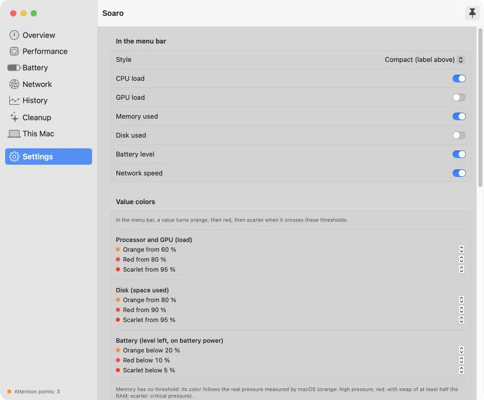
The menu bar, drawn here as an illustration. A value turns orange, red, then scarlet as it gets worse.
Soaro lives in your menu bar. It watches CPU, GPU, memory, disk, network and battery, and tells you what to do when something goes wrong.
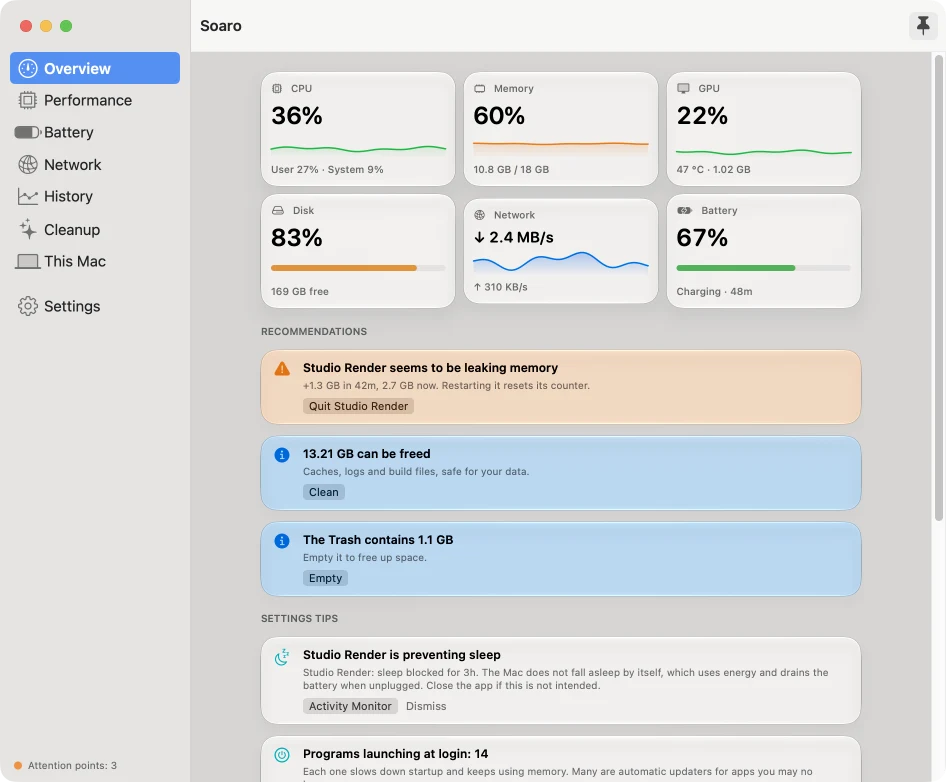
Open the panel from the menu bar for a quick look, or keep the full window on your desktop. Everything is measured on your Mac, in real time.
Choose what you want to see, next to the clock. A value turns orange, red, then scarlet as it gets worse. You choose the thresholds, and hovering over the icon tells you why something is colored.

Load per core, with efficiency and performance cores apart. Memory pressure, swap and compressed memory. Disk speed and SMART status. Temperatures, fans and power draw.
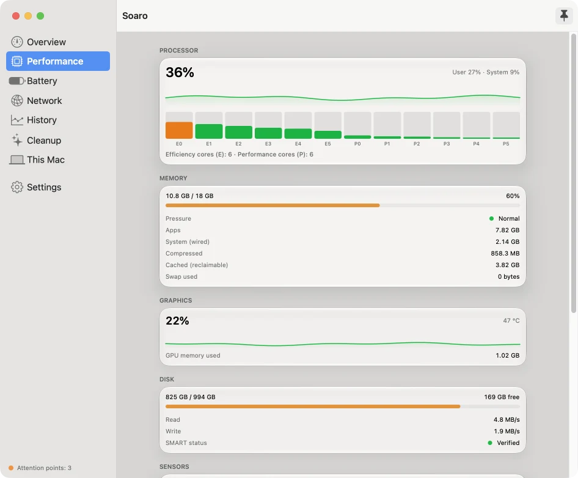
Is your battery still good? Which app drains it? Health and cycle count, charging power in watts, and the energy impact of each app.
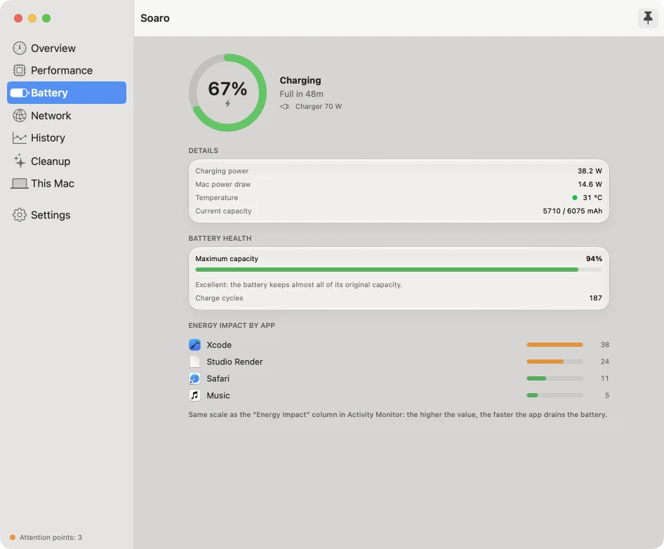
Speed, volume, and who is using your connection: traffic per app, VPN detection done locally, Wi-Fi quality and latency. Public IP and country, if you turn it on.
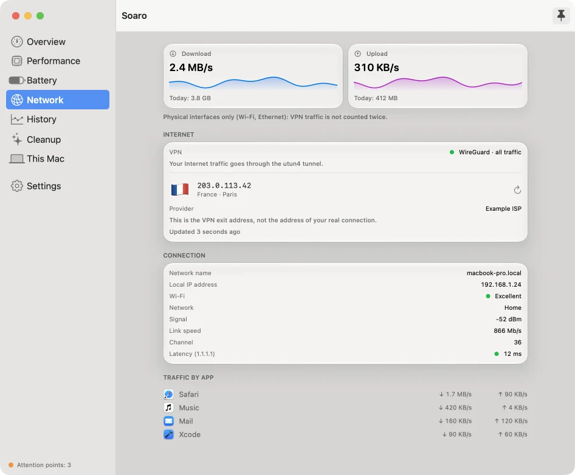
Something was slow last night? Look at the last hour, day, week or month. The history stays on your Mac, for 30 days.
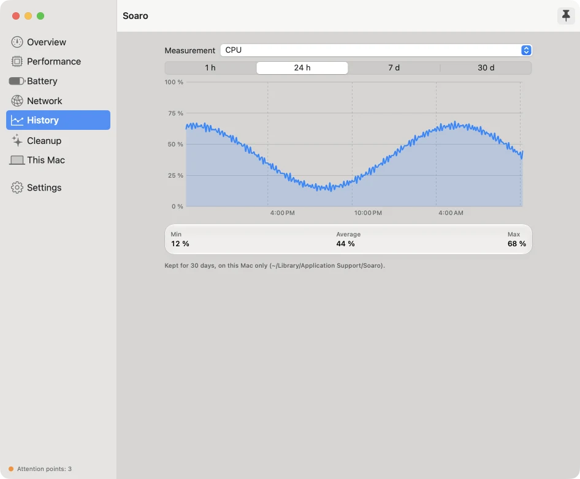
New in 1.1.0
Soaro finds what your tools leave behind, shows the real size, and removes only what you check.
node_modules, .build, target, Pods of projects you no longer open.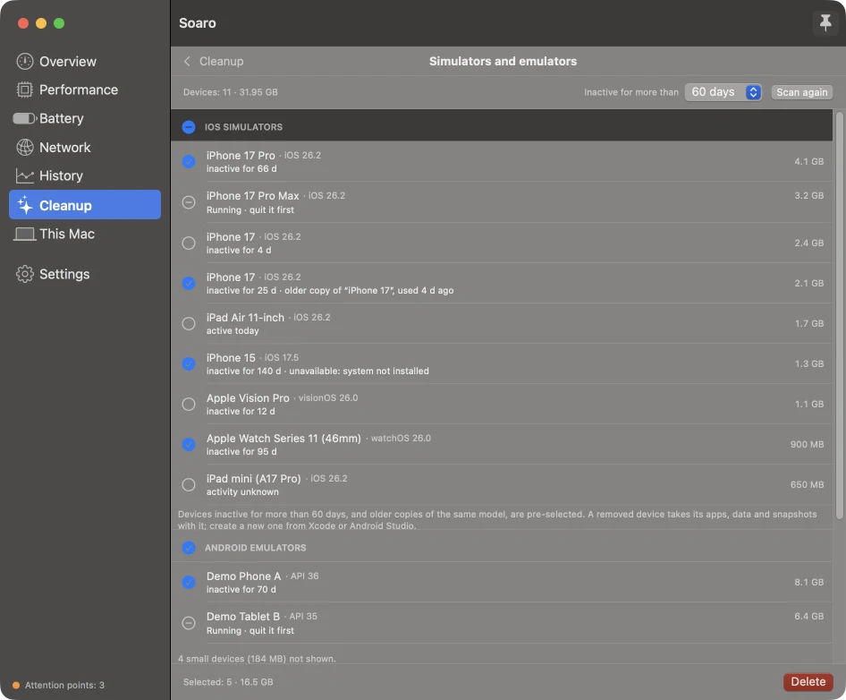
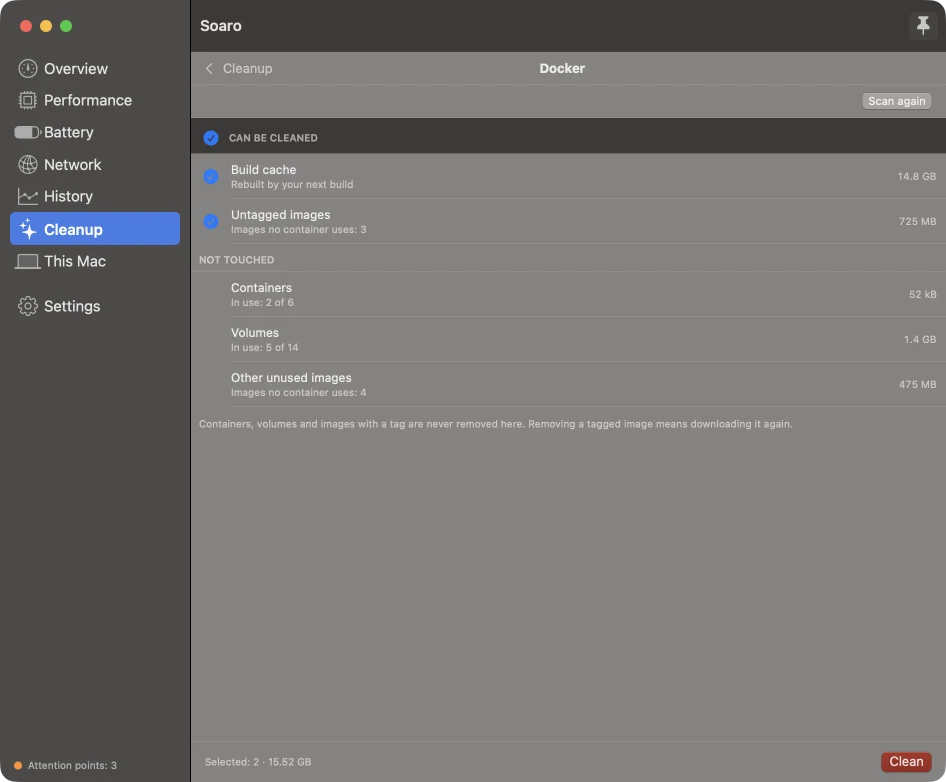
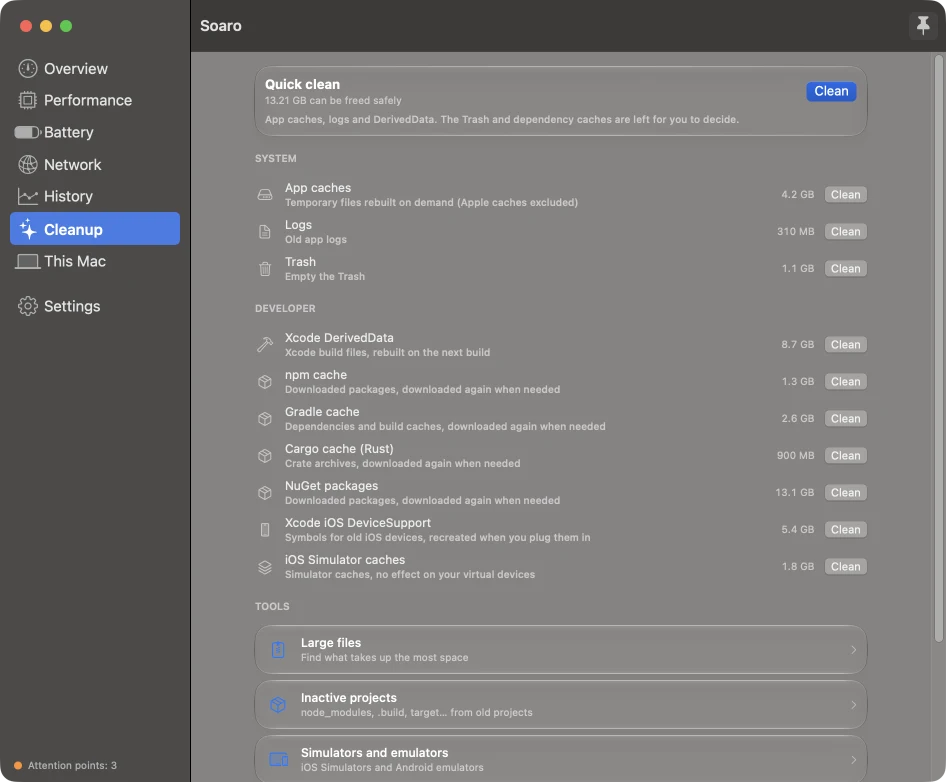
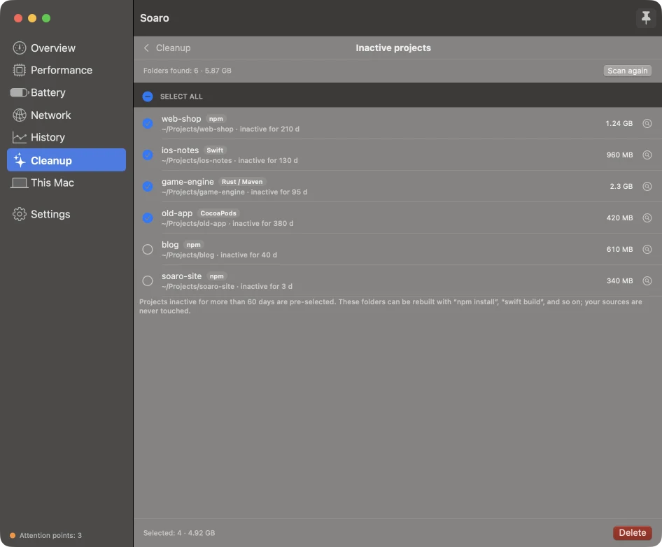
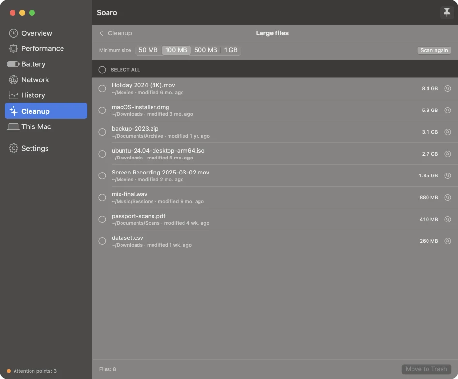
Soaro warns you about a full disk, memory under pressure, a probable memory leak, a hot Mac or a worn battery. It only sends a notification when the problem is critical.
Soaro reads a few macOS settings and tells you what could help: Low Power Mode, an app that blocks sleep, too many login items, storage, updates, backup.
Soaro never changes a setting. The button opens the right pane in System Settings, and you decide. In every confirmation window, Cancel is the default button.
About 20-35 MB of memory and 1-2% of one CPU core when idle. When the panel is closed, the interface costs nothing.
Soaro runs on your Mac and keeps your data there. The app has no account, no analytics and no tracking. The code is public: you can check it.
build or dist folder is never suggested.~/Library/Application Support/Soaro.I prefer to be clear about what Soaro cannot do.
Soaro is signed with a Developer ID and notarized by Apple. It updates itself.
.dmg file.Soaro is free and open source. If it saves you time, you can support it. It is optional, and it helps me keep working on it.
Buy me a coffee